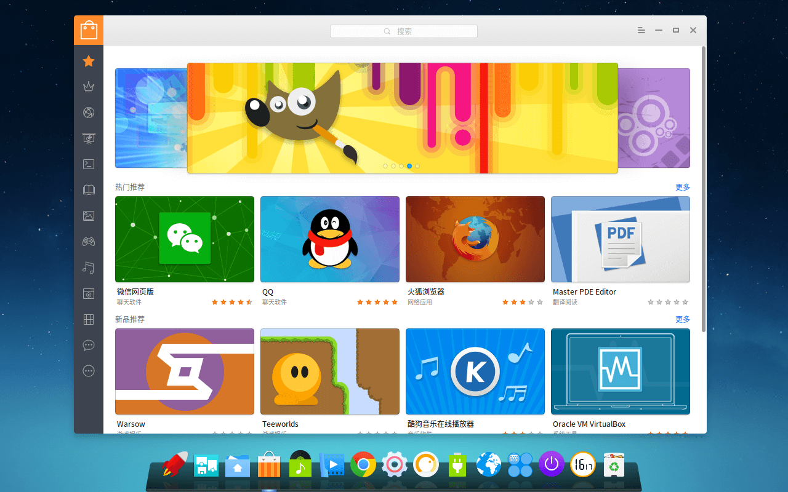

-
- Basic info. 基本信息
- 个人信息: 谢刘铎/ 男 /
- 学历: 本科
- 毕业学校: 华北理工大学
- 工作时间： 2年
- Blog: www.xieliuduo.com
- GitHub: www.github.com/xieliuduo
-
- Experience. 项目与工作经验
武汉深之度科技有限公司（2015.7 - 2015.11）
-
深度商店项目
参与 Linux Deepin 深度商店V4.0 的前端开发工作，根据设计图完成项目的大部分样式，完成了首页、搜索列表、软件详情、软件分类、专题、关于等页面，其中有评论交互、三个不同的轮播图、侧边栏左右拖动、搜索交互等内容，项目采用 WebApp 的形式，运行在 Qt WebKit 上，后端与 deepin 操作系统深度整合，支持一键安装、更新和卸载软件
使用 AngularJS 框架 和 Sass 预处理器 来实现前端组件及数据交互，使用 Gulp Bower 改进工作流

个人项目
-
- Skill. 技能清单
Web前端
-
HTML / CSS
能够编写语义化的 HTML，模块化的 CSS，完成较复杂的布局
熟悉 Less / Sass / 等CSS预处理和后处理方法、工具
-
JavaScript
熟悉原生Javascript，能脱离jQuery等类库编码
能运用模块化、面向对象的方式编程
了解 RequireJS jQuery AngularJS 的使用
-
其他
熟悉 Grunt Gulp 前端自动化工具
了解前端安全、性能优化方面的一些知识
其他
-
是一个有趣的人
严重强迫症，不能忍受界面一个像素的偏差，同样不能忍受代码格式一个空格的偏差
学习能力强，以上绝大多数的技能都是自学修得的
掌握 Git 等开发工具的使用
能够熟练使用 Markdown 进行写作

谢刘铎的简历
"Write the Code. Change the World."
-
- Contact. 联系方式
- 邮箱: xliuduo@163.com
- 微信: xld5273
- 电话：180 3229 7131
- QQ: 959459496
-
- Application. 应聘岗位
- 前端工程师
-
- Tech. 技能点
JavaScriptHTMLCSSPs
我是一个充满活力、对前端由衷热爱、善于发现问题的前端工程师。
我目前正在寻找前端工程师岗位，希望借此机会为贵司献上我的一点绵薄之力，快招我到碗里来吧！